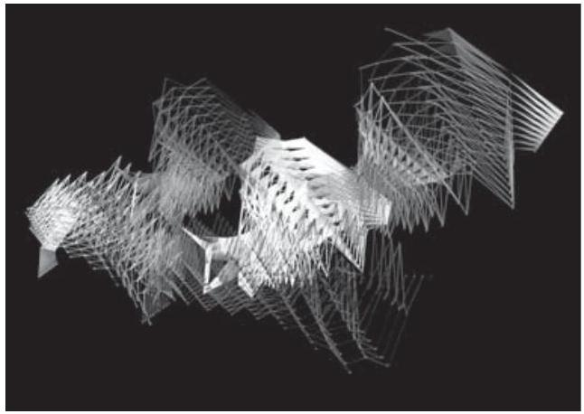
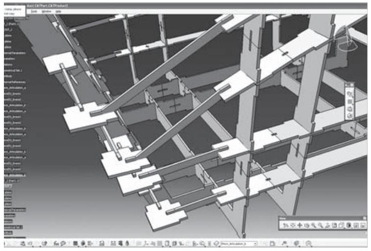

Sesión 2 · Del dibujo a la información
Arranca el contenido formal: la idea grande del curso, del dibujo a mano al CAD, y de CAD a BIM. Sin abrir el software todavía.
Objetivos de esta sesión
Al terminar podrás:
- Distinguir un flujo CAD de dibujo en dos dimensiones de un flujo BIM, en términos de representación frente a información.
- Explicar qué significa que un elemento sea paramétrico y que necesite un anfitrión.
- Elegir y justificar un museo documentable para analizarlo en la próxima sesión.
La pregunta con la que arrancamos
Cuando dibujas una línea en la computadora, ¿esa línea sabe que es un muro? ¿La máquina entiende que estás diseñando un edificio, o solo guarda trazos? La respuesta separa dos formas de trabajar, y marca hacia dónde va este curso.
Del dibujo a mano al dibujo asistido por computadora
Antes de abrir cualquier software conviene entender de dónde viene. El dibujo asistido por computadora, conocido por su sigla en inglés CAD (Computer Aided Design o Computer Aided Drafting), no nació en la arquitectura sino en los laboratorios de investigación.
Como relatan Cardoso Llach y Capdevila Werning (2009), el punto de partida suele situarse en el Sketchpad, desarrollado por Ivan Sutherland como tesis doctoral en el Massachusetts Institute of Technology en 1963. El Sketchpad propuso la primera interfaz gráfica de la historia: una pantalla en la que se podía dibujar directamente con ayuda de un lápiz óptico. Las industrias automotriz y aeronáutica se interesaron de inmediato por esta tecnología, pero pasaron más de quince años antes de que la computación gráfica empezara a transformar de manera definitiva el oficio del arquitecto. Esto se debió, en buena parte, a la fuerte reducción en el precio de los computadores y al aumento exponencial de su capacidad de procesamiento.

Los primeros sistemas CAD evolucionaron como una automatización de la mesa de dibujo tradicional: una pantalla que mostraba una hoja de papel ilimitada en la que el arquitecto manipulaba versiones digitales de la regla, la escuadra, el compás y la pluma.
La idea de fondo del curso
El CAD comenzó imitando el tablero de dibujo, pero la computadora puede hacer mucho más que guardar líneas: puede guardar información. Cuando una línea deja de ser solo un trazo y se convierte en un muro que conoce su altura, su material y su relación con otros elementos, pasamos del simple dibujo asistido al modelado de información. Ese salto, de CAD a BIM, es lo que estudiaremos enseguida y lo que hace de Revit una herramienta distinta.

CAD frente a BIM
La distinción entre CAD y BIM es la base conceptual de todo el curso. Aunque a primera vista ambos producen dibujos en pantalla, su forma de entender el proyecto es muy distinta (Hamad, 2025).
CAD: dibujo asistido por computadora
En un flujo CAD de dibujo en dos dimensiones representas el edificio mediante entidades gráficas: líneas, arcos, textos y tramas. Dos líneas paralelas pueden significar un muro para ti, pero el archivo no las gestiona necesariamente como un elemento arquitectónico con material, altura y relaciones. Su significado vive sobre todo en la mente de quien dibuja. Además, plantas, secciones y alzados suelen dibujarse por separado y sin vínculo entre sí: si el proyecto cambia, hay que volver a cada dibujo y editarlo a mano.
Cuidado con una frase que vas a oír mucho
Se repite a menudo que «en CAD se dibuja, no se modela ni se diseña» (Hamad, 2025). Como gancho funciona: subraya el contraste. Como definición es incorrecta, y conviene que lo sepas desde ahora: CAD abarca también modelado tridimensional, superficies, sólidos y geometría paramétrica. De hecho, Revit es heredero de esa evolución.
La distinción precisa no es dibujar contra modelar, ni 2D contra 3D. Es esta:
CAD = representación · BIM = información
Es decir: dibujo independiente frente a información estructurada y coordinada alrededor de objetos del edificio. Guarda esta formulación, porque es la que se te pedirá en el examen.
BIM: modelado de información de la construcción
BIM significa Building Information Modeling, es decir, modelado de información de la construcción. En lugar de líneas, arcos y círculos, se crea desde el principio un modelo en tres dimensiones con elementos inteligentes: muros, puertas, ventanas, pisos, techos y cubiertas. Cada elemento contiene en su interior una gran cantidad de información. Por ejemplo, un muro dibujado en la planta conoce su propia altura; por eso lo ves en dos dimensiones en la planta y, al mismo tiempo, extendiéndose en la vista tridimensional (Hamad, 2025).
El enfoque BIM se apoya en tres ideas. La primera es que los elementos son paramétricos: entienden sus relaciones mutuas, de modo que cuando un elemento cambia, los que dependen de él reaccionan en consecuencia. La segunda es que algunos elementos necesitan un anfitrión (host): una puerta o una ventana necesitan un muro que las aloje, y una luminaria necesita un techo. La tercera es que todas las partes del modelo están interrelacionadas: mover un muro en la planta afecta de inmediato a todas las demás vistas, e incluso las tablas de cantidades se actualizan solas.
La idea esencial: de dibujar a modelar información
En CAD el archivo guarda cómo se ve el proyecto. En BIM el archivo guarda qué es el proyecto: un edificio compuesto por elementos que saben lo que son y cómo se relacionan. De ese modelo único se derivan, de manera automática y siempre coordinada, las plantas, las secciones, los alzados, las vistas tridimensionales y las tablas de cantidades. Comprender esta diferencia es más importante, en este momento del curso, que memorizar cualquier comando.
| CAD (dibujo) | BIM (modelo) |
|---|---|
| Se dibuja con líneas, arcos y círculos. | Se modela con elementos inteligentes (muros, puertas, pisos). |
| Una línea no sabe qué representa. | Cada elemento contiene su propia información. |
| Plantas, secciones y alzados son dibujos independientes, que pueden no estar coordinados entre sí. | Todas las vistas se derivan de un mismo modelo. |
| Un cambio obliga a corregir cada dibujo a mano. | Un cambio correctamente modelado se refleja en las vistas y tablas relacionadas. |
| El resultado es un conjunto de dibujos. | El resultado es un modelo coordinado del edificio. |
El orden importa, y tu tarea
En este curso primero entendemos qué vamos a construir y cómo se representa un edificio; la herramienta llega cuando ya sepamos qué estamos haciendo (la conocerás al final de este parcial). Tarea: elige un museo o espacio cultural que puedas documentar, no solo admirar. En la Sesión 3 lo analizaremos en equipo: será tu primer precedente.
Qué significa que un museo sea «documentable»
Elegir un edificio espectacular del que solo encuentres fotos bonitas te dejará sin nada que analizar el próximo día. Antes de decidirte, comprueba que puedes reunir como mínimo:
- Una planta legible. No negociable: sin planta no hay análisis. Si no la encuentras, cambia de museo.
- Identificación del caso: nombre, ciudad, autor o equipo, y año.
- Fotografías de interior y de exterior, no solo la fachada icónica.
- Alguna evidencia de sección, altura o entrada de luz: un corte, una foto de sala donde se vea el techo, un lucernario.
- La fuente de cada documento, para poder decir de dónde salió.
Un museo pequeño y bien documentado sirve mucho más que uno famoso del que solo tienes postales.
Comprobación de logro
En una frase, corrige la afirmación «en CAD se dibuja, no se modela» usando la formulación precisa que vimos hoy. Si puedes escribirla sin mirar el apunte, entendiste la sesión.
Entrega además el museo que elegiste con dos líneas de justificación: por qué ese y dónde encontraste su planta.
Referencias
- Cardoso Llach, D. y Capdevila Werning, R. (2009). Arquitectura, diseño y computación. DEARQ, Revista de Arquitectura, (4), pp. 136–140. Universidad de los Andes.
- Hamad, M. (2025). Autodesk Revit 2025 Architecture. Mercury Learning and Information (sello de De Gruyter). Capítulo 1: Introduction to Revit 2025.
Qué sigue: Sesión 3, taller: leer un museo (análisis de precedentes en equipo).